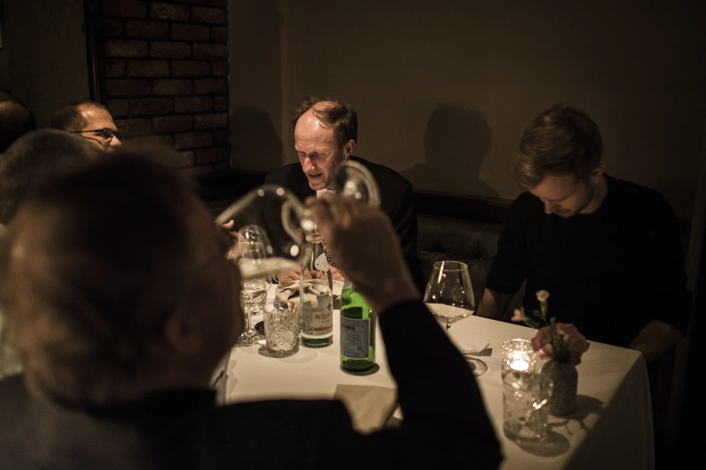

Abonnement Læsetid: 7 MIN.
Gas er et godt politisk våben. Det er bare ikke Putin, der bruger det
Nogle EU-lande frygter, at Rusland kan bruge Nord Stream 2 som politisk våben mod Europa. Men i virkeligheden er det omvendt, mener firmaerne bag rørledningen: Det er EU, der bruger gassen som våben over for Putin. Information har været på charmetur med den russiske gas' europæiske venner

Rusland vil ikke bruge gasrørledningen, Nord Stream 2, som politisk våben, lyder det fra folkene bag projektet. Rørledningen koster 70 mia. kr. og vil sende 55 mia. kubikmeter gas ind i Europa om året.
Peter Nygaard Christensen